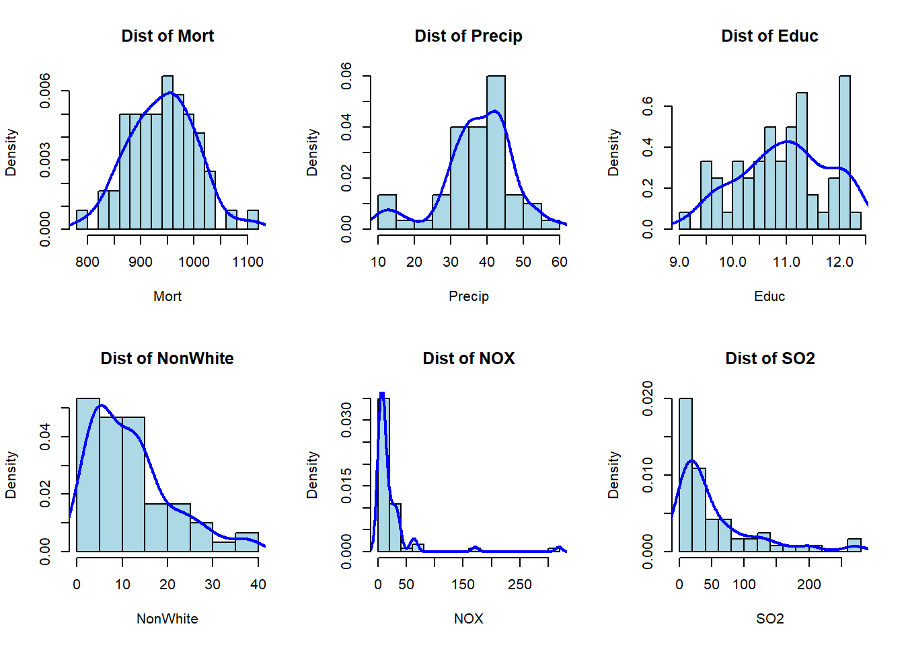
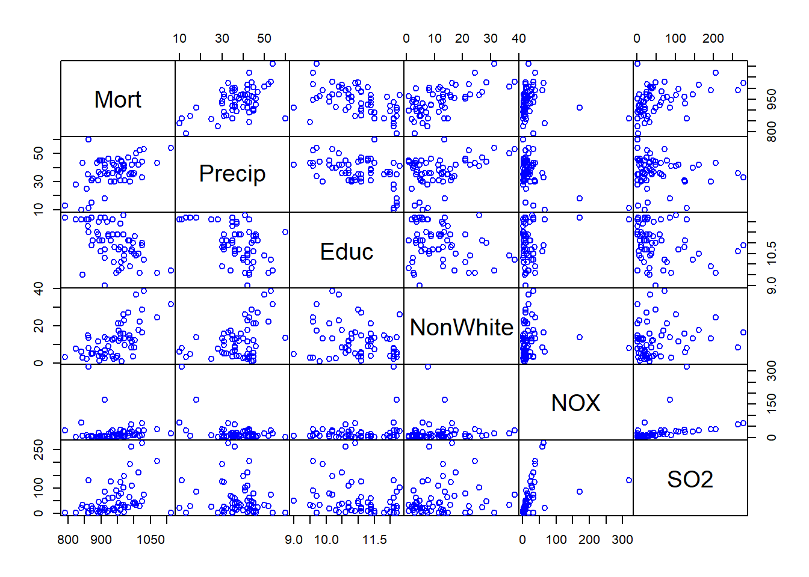
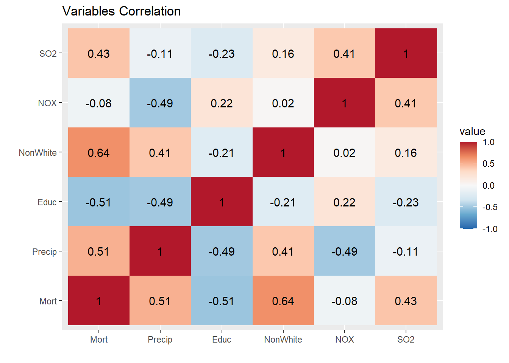
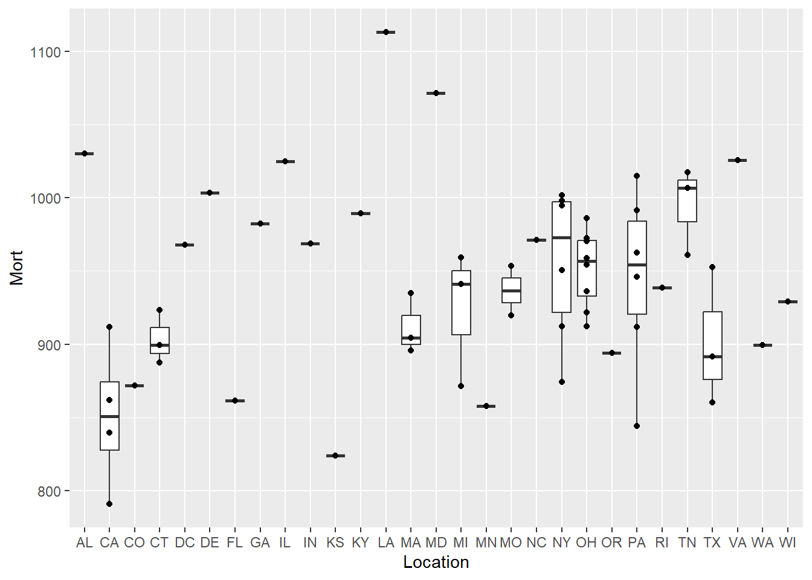
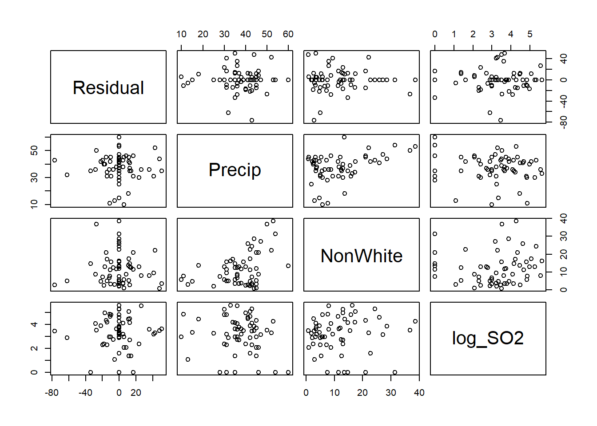
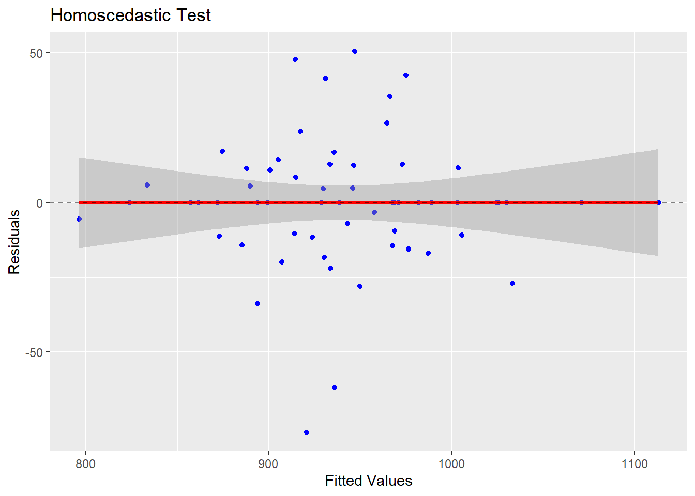
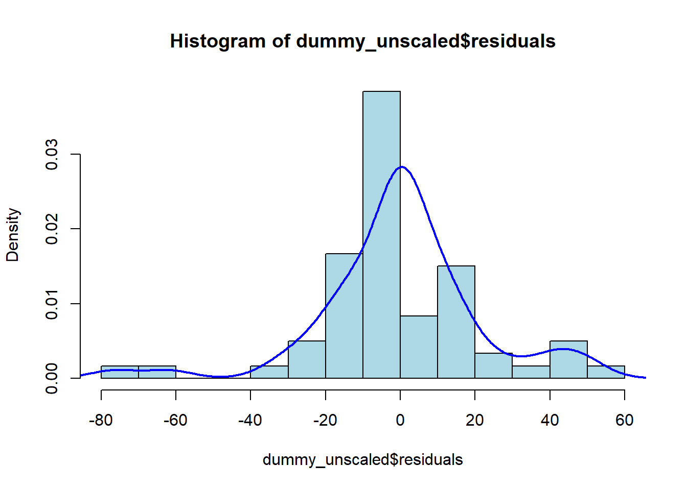

library(tidyverse)
library(skimr)
library(reshape)
library(hrbrthemes)
library(car)
library(lmtest)
library(MASS)
library(PulmoDataSets)Air Pollution Mortality Analysis
Import Required Libraries
Import Data
This data contains information from an early study exploring the relationship between air pollution and mortality across 5 Standard Metropolitan Statistical Areas in the U.S. between 1959 and 1961.
Check https://lightbluetitan.github.io/pulmodatasets/index.html for more information.
data("air_polution_mortality_df")
df <- air_polution_mortality_df
df City Mort Precip Educ NonWhite NOX SO2
1 San Jose, CA 790.73 13 12.2 3.0 32 3
2 Wichita, KS 823.76 28 12.1 7.5 2 1
3 San Diego, CA 839.71 10 12.1 5.9 66 20
4 Lancaster, PA 844.05 43 9.5 2.9 7 32
5 Minneapolis, MN 857.62 25 12.1 2.0 11 26
6 Dallas, TX 860.10 35 11.8 14.8 1 1
7 Miami, FL 861.44 60 11.5 13.5 1 1
8 Los Angeles, CA 861.83 11 12.1 7.8 319 130
9 Grand Rapids, MI 871.34 31 10.9 5.1 3 10
10 Denver, CO 871.77 15 12.2 4.7 8 28
11 Rochester, NY 874.28 32 11.1 5.0 4 18
12 Hartford, CT 887.47 43 11.5 7.2 3 10
13 Fort Worth, TX 891.71 31 11.4 11.5 1 1
14 Portland, OR 893.99 37 12.0 3.6 21 44
15 Worcester, MA 895.70 45 11.1 1.0 3 8
16 Seattle, WA 899.26 35 12.2 5.7 7 20
17 Bridgeport, CT 899.53 45 10.6 5.3 4 4
18 Springfield, MA 904.16 45 11.1 3.4 4 20
19 San Francisco, CA 911.70 18 12.2 13.7 171 86
20 York, PA 911.82 42 9.0 4.8 8 49
21 Utica, NY 912.20 40 10.3 2.5 2 11
22 Canton, OH 912.35 36 10.7 6.7 7 20
23 Kansas City, MO 919.73 35 12.0 12.6 4 4
24 Akron, OH 921.87 36 11.4 8.8 15 59
25 New Haven, CT 923.23 46 11.3 8.8 3 8
26 Milwaukee, WI 929.15 30 11.1 5.8 23 125
27 Boston, MA 934.70 43 12.1 3.5 32 62
28 Dayton, OH 936.23 36 11.4 12.4 4 16
29 Providence, RI 938.50 42 10.1 2.2 4 18
30 Flint, MI 941.18 30 10.8 13.1 4 11
31 Reading, PA 946.18 41 9.6 2.7 11 89
32 Syracuse, NY 950.67 38 11.4 3.8 5 25
33 Houston, TX 952.53 46 11.4 21.0 5 1
34 Saint Louis, MO 953.56 34 9.7 17.2 15 68
35 Youngstown, OH 954.44 38 10.7 11.7 13 39
36 Columbus, OH 958.84 37 11.9 13.1 9 15
37 Detroit, MI 959.22 31 10.8 15.8 35 124
38 Nashville, TN 961.01 45 10.1 21.0 14 78
39 Allentown, PA 962.35 44 9.8 0.8 6 33
40 Washington, DC 967.80 41 12.3 25.9 28 102
41 Indianapolis, IN 968.66 39 11.4 15.6 7 33
42 Cincinnati, OH 970.47 40 10.2 13.0 26 146
43 Greeensboro, NC 971.12 42 10.4 22.7 3 5
44 Toledo, OH 972.46 31 10.7 9.5 7 25
45 Atlanta, GA 982.29 47 11.1 27.1 8 24
46 Cleveland, OH 985.95 35 11.1 14.7 21 64
47 Louisville, KY 989.27 30 9.9 13.1 37 193
48 Pittsburgh, PA 991.29 36 10.6 8.1 59 263
49 New York, NY 994.65 42 10.7 11.3 26 108
50 Albany, NY 997.88 35 11.0 3.5 10 39
51 Buffalo, NY 1001.90 36 10.5 8.1 12 37
52 Wilmington, DE 1003.50 45 11.3 12.1 11 42
53 Memphis, TN 1006.49 50 10.4 36.7 18 34
54 Philadelphia, PA 1015.02 42 10.5 17.5 32 161
55 Chattanooga, TN 1017.61 52 9.6 22.2 8 27
56 Chicago, IL 1024.89 33 10.9 16.3 63 278
57 Richmond, VA 1025.50 44 11.0 28.6 9 48
58 Birmingham, AL 1030.38 53 10.2 38.5 32 72
59 Baltimore, MD 1071.29 43 9.6 24.4 38 206
60 New Orleans, LA 1113.06 54 9.7 31.4 17 1Exploratory Data Analysis
I assume that City won’t be necessary and dropped in this stage since it is a unique and a categorical/factor variable. However, as each city has its non-unique states, it will still be considered later.
Quick Summary
df_num <- df[,-1]
skim(df_num)| Name | df_num |
| Number of rows | 60 |
| Number of columns | 6 |
| _______________________ | |
| Column type frequency: | |
| numeric | 6 |
| ________________________ | |
| Group variables | None |
Variable type: numeric
| skim_variable | n_missing | complete_rate | mean | sd | p0 | p25 | p50 | p75 | p100 | hist |
|---|---|---|---|---|---|---|---|---|---|---|
| Mort | 0 | 1 | 940.36 | 62.20 | 790.73 | 898.37 | 943.68 | 983.20 | 1113.06 | <U+2582><U+2586><U+2587><U+2585><U+2581> |
| Precip | 0 | 1 | 37.37 | 9.98 | 10.00 | 32.75 | 38.00 | 43.25 | 60.00 | <U+2582><U+2582><U+2587><U+2587><U+2581> |
| Educ | 0 | 1 | 10.97 | 0.85 | 9.00 | 10.40 | 11.05 | 11.50 | 12.30 | <U+2582><U+2583><U+2586><U+2587><U+2586> |
| NonWhite | 0 | 1 | 11.87 | 8.92 | 0.80 | 4.95 | 10.40 | 15.65 | 38.50 | <U+2587><U+2586><U+2582><U+2581><U+2581> |
| NOX | 0 | 1 | 22.65 | 46.33 | 1.00 | 4.00 | 9.00 | 23.75 | 319.00 | <U+2587><U+2581><U+2581><U+2581><U+2581> |
| SO2 | 0 | 1 | 53.77 | 63.39 | 1.00 | 11.00 | 30.00 | 69.00 | 278.00 | <U+2587><U+2582><U+2581><U+2581><U+2581> |
Histogram
par(mfrow = c(2,3))
for (col in colnames(df_num)){
hist(df_num[[col]], freq = F, breaks = 13, xlab = col, main = paste('Dist of', col), col = 'lightblue')
lines(density(df_num[[col]]), col = 'blue', lwd = 2)
}
Each variable’s, except for NOX, distribution seems quite reasonable and satisfies the assumption of a regression that There must be sufficient variation in the values of X variables. Although SO2 appears to be heavily skewed, its values still vary between 50-250. NOX, on the other hand, are lies almost entirely between 0 and 50, with only few points outside of this range.
I suppose that NOX won’t give significant effect in the model. But we’ll see.
Scatter Plot
pairs(df_num,
col = 'blue',
gap = 0,
)
It is apparent that the effect of NOX on Mort appears to be completely random – might still be slightly correlated though.
This graph gives me a suspicion of nonlinear link between SO2 and City. I will perform a certain transformation on the variable to reveal this nonlinear relationship.
Correlation Heatmap
corr <- melt(cor(df_num, method = "pearson"), as.is = TRUE)
ggplot(corr, aes(x = X1, y = X2, fill = value)) +
geom_tile() +
scale_fill_distiller(palette = 'RdBu', limit = c(-1,1)) +
geom_text(aes(label = round(value, 2)), col = 'black', size = 4) +
labs(title = 'Variables Correlation', x = '', y = '')
As I assumed previously, NOX is barely correlated with Mort, with only -0.08 of correlation coefficient. I also thought of a nonlinear correlation between SO2 and Mort. To capture their connection more accurately, I am considering on using Spearman method to assess it.
cor(df_num$SO2, df_num$Mort, method = 'spearman')[1] 0.4905252Apparently, It doesn’t remarkably differ with the Pearson method, yet still give a moderate correlation coefficient.
Modeling
Since the data only contains numeric variables and the dependent variable is a continuous variable, this will be an easy regression analysis. The analysis will be conducted using backward elimination method. I will rely on the statistical test, such as t-test, to eliminate insignificant variables. However, in the later section, I will also consider to retain insignificant variable based on prior evidence and/or domain knowledge.
First Model
model1 <- lm(Mort ~ ., data = df_num)
summary(model1)
Call:
lm(formula = Mort ~ ., data = df_num)
Residuals:
Min 1Q Median 3Q Max
-91.893 -18.986 -3.433 15.872 91.528
Coefficients:
Estimate Std. Error t value Pr(>|t|)
(Intercept) 1000.1026 92.3982 10.824 3.85e-15 ***
Precip 1.3792 0.7000 1.970 0.053943 .
Educ -15.0791 7.0706 -2.133 0.037518 *
NonWhite 3.1602 0.6287 5.026 5.84e-06 ***
NOX -0.1076 0.1359 -0.792 0.432030
SO2 0.3554 0.0914 3.889 0.000278 ***
---
Signif. codes: 0 '***' 0.001 '**' 0.01 '*' 0.05 '.' 0.1 ' ' 1
Residual standard error: 37.36 on 54 degrees of freedom
Multiple R-squared: 0.6698, Adjusted R-squared: 0.6392
F-statistic: 21.9 on 5 and 54 DF, p-value: 6.478e-12A pretty decent starting model, with the R-squared value of 0.6392. Next, I will transform SO2 with log transformation to reveal the nonlinear effect.
Second Model
model2 <- lm(Mort ~ Precip + Educ + NonWhite + NOX + log(SO2), data = df_num)
summary(model2)
Call:
lm(formula = Mort ~ Precip + Educ + NonWhite + NOX + log(SO2),
data = df_num)
Residuals:
Min 1Q Median 3Q Max
-98.988 -19.940 1.057 17.499 115.431
Coefficients:
Estimate Std. Error t value Pr(>|t|)
(Intercept) 944.17471 94.17758 10.025 6.25e-14 ***
Precip 1.42242 0.68221 2.085 0.0418 *
Educ -13.35817 6.95943 -1.919 0.0602 .
NonWhite 3.43512 0.60693 5.660 5.95e-07 ***
NOX -0.09677 0.12989 -0.745 0.4595
log(SO2) 15.96124 3.67450 4.344 6.21e-05 ***
---
Signif. codes: 0 '***' 0.001 '**' 0.01 '*' 0.05 '.' 0.1 ' ' 1
Residual standard error: 36.39 on 54 degrees of freedom
Multiple R-squared: 0.6867, Adjusted R-squared: 0.6577
F-statistic: 23.68 on 5 and 54 DF, p-value: 1.615e-12It can be seen that log SO2 results in a higher coefficient and higher Adjusted R-squared of the model. From this point onward, I will use log SO2 in the model.
Third Model
To give a better perspective on how each variable influences the dependent variable, I transform the variables to a standardised form. Standardisation on regression is basically the same as regular regression with a transformation of k = 1/var(X). Hence, by its statistical properties, the R-squared remain the same as the regular form, but with a better interpretation of the beta coefficient.
df_num$log_SO2 <- log(df_num$SO2)
df_scaled2 <- as.data.frame(scale(df_num))
df_scaled2 <- subset(df_scaled2, select = -c(SO2))
model_scaled<- lm(Mort ~ Precip + Educ + NonWhite + NOX + log_SO2, data = df_scaled2)
summary(model_scaled)
Call:
lm(formula = Mort ~ Precip + Educ + NonWhite + NOX + log_SO2,
data = df_scaled2)
Residuals:
Min 1Q Median 3Q Max
-1.59140 -0.32056 0.01699 0.28132 1.85575
Coefficients:
Estimate Std. Error t value Pr(>|t|)
(Intercept) 6.767e-16 7.553e-02 0.000 1.0000
Precip 2.283e-01 1.095e-01 2.085 0.0418 *
Educ -1.815e-01 9.458e-02 -1.919 0.0602 .
NonWhite 4.927e-01 8.705e-02 5.660 5.95e-07 ***
NOX -7.208e-02 9.676e-02 -0.745 0.4595
log_SO2 3.843e-01 8.847e-02 4.344 6.21e-05 ***
---
Signif. codes: 0 '***' 0.001 '**' 0.01 '*' 0.05 '.' 0.1 ' ' 1
Residual standard error: 0.585 on 54 degrees of freedom
Multiple R-squared: 0.6867, Adjusted R-squared: 0.6577
F-statistic: 23.68 on 5 and 54 DF, p-value: 1.615e-12As we can see, the Adjusted R-squared remain consistent while the beta coefficient is transformed. Here, the model shows that NOX has a small influence on Mort by less than 0.1 of. beta coefficient. Therefore, I drop the variable to look for a better fit.
model3 <- lm(Mort ~ Precip + Educ + NonWhite + log_SO2, data = df_scaled2)
summary(model3)
Call:
lm(formula = Mort ~ Precip + Educ + NonWhite + log_SO2, data = df_scaled2)
Residuals:
Min 1Q Median 3Q Max
-1.61353 -0.36244 -0.01152 0.30893 1.78077
Coefficients:
Estimate Std. Error t value Pr(>|t|)
(Intercept) 6.881e-16 7.522e-02 0.000 1.00000
Precip 2.634e-01 9.847e-02 2.675 0.00982 **
Educ -1.898e-01 9.355e-02 -2.028 0.04736 *
NonWhite 4.763e-01 8.390e-02 5.678 5.31e-07 ***
log_SO2 3.615e-01 8.266e-02 4.373 5.50e-05 ***
---
Signif. codes: 0 '***' 0.001 '**' 0.01 '*' 0.05 '.' 0.1 ' ' 1
Residual standard error: 0.5827 on 55 degrees of freedom
Multiple R-squared: 0.6835, Adjusted R-squared: 0.6605
F-statistic: 29.7 on 4 and 55 DF, p-value: 3.599e-13Dropping NOX apparently leads to a better fit of the model – shown by bigger Adjusted R-Squared.
model_unscaled <- lm(Mort ~ Precip + Educ + NonWhite + log(SO2), data = df_num)
summary(model_unscaled)
Call:
lm(formula = Mort ~ Precip + Educ + NonWhite + log(SO2), data = df_num)
Residuals:
Min 1Q Median 3Q Max
-100.364 -22.544 -0.716 19.216 110.767
Coefficients:
Estimate Std. Error t value Pr(>|t|)
(Intercept) 944.8448 93.7916 10.074 4.28e-14 ***
Precip 1.6410 0.6134 2.675 0.00982 **
Educ -13.9637 6.8838 -2.028 0.04736 *
NonWhite 3.3212 0.5850 5.678 5.31e-07 ***
log(SO2) 15.0134 3.4333 4.373 5.50e-05 ***
---
Signif. codes: 0 '***' 0.001 '**' 0.01 '*' 0.05 '.' 0.1 ' ' 1
Residual standard error: 36.24 on 55 degrees of freedom
Multiple R-squared: 0.6835, Adjusted R-squared: 0.6605
F-statistic: 29.7 on 4 and 55 DF, p-value: 3.599e-13Moreover, All of the variables satisfy the significance requirement (beta ≠ 0), as reflected by p-values < 0.05.
Dummy Modeling
An Adjusted R-Squared of 0.6605 is quite acceptable, but I think it could be improved.
In the previous stage, I didn’t consider City as an explanatory variable as it is a unique factor. However, some cities shared same States that could be regarded as a covariate.
df$Location <- sub(".*,\\s*", "", df$City)
df2 <- subset(df, select = -c(City))
df2 Mort Precip Educ NonWhite NOX SO2 Location
1 790.73 13 12.2 3.0 32 3 CA
2 823.76 28 12.1 7.5 2 1 KS
3 839.71 10 12.1 5.9 66 20 CA
4 844.05 43 9.5 2.9 7 32 PA
5 857.62 25 12.1 2.0 11 26 MN
6 860.10 35 11.8 14.8 1 1 TX
7 861.44 60 11.5 13.5 1 1 FL
8 861.83 11 12.1 7.8 319 130 CA
9 871.34 31 10.9 5.1 3 10 MI
10 871.77 15 12.2 4.7 8 28 CO
11 874.28 32 11.1 5.0 4 18 NY
12 887.47 43 11.5 7.2 3 10 CT
13 891.71 31 11.4 11.5 1 1 TX
14 893.99 37 12.0 3.6 21 44 OR
15 895.70 45 11.1 1.0 3 8 MA
16 899.26 35 12.2 5.7 7 20 WA
17 899.53 45 10.6 5.3 4 4 CT
18 904.16 45 11.1 3.4 4 20 MA
19 911.70 18 12.2 13.7 171 86 CA
20 911.82 42 9.0 4.8 8 49 PA
21 912.20 40 10.3 2.5 2 11 NY
22 912.35 36 10.7 6.7 7 20 OH
23 919.73 35 12.0 12.6 4 4 MO
24 921.87 36 11.4 8.8 15 59 OH
25 923.23 46 11.3 8.8 3 8 CT
26 929.15 30 11.1 5.8 23 125 WI
27 934.70 43 12.1 3.5 32 62 MA
28 936.23 36 11.4 12.4 4 16 OH
29 938.50 42 10.1 2.2 4 18 RI
30 941.18 30 10.8 13.1 4 11 MI
31 946.18 41 9.6 2.7 11 89 PA
32 950.67 38 11.4 3.8 5 25 NY
33 952.53 46 11.4 21.0 5 1 TX
34 953.56 34 9.7 17.2 15 68 MO
35 954.44 38 10.7 11.7 13 39 OH
36 958.84 37 11.9 13.1 9 15 OH
37 959.22 31 10.8 15.8 35 124 MI
38 961.01 45 10.1 21.0 14 78 TN
39 962.35 44 9.8 0.8 6 33 PA
40 967.80 41 12.3 25.9 28 102 DC
41 968.66 39 11.4 15.6 7 33 IN
42 970.47 40 10.2 13.0 26 146 OH
43 971.12 42 10.4 22.7 3 5 NC
44 972.46 31 10.7 9.5 7 25 OH
45 982.29 47 11.1 27.1 8 24 GA
46 985.95 35 11.1 14.7 21 64 OH
47 989.27 30 9.9 13.1 37 193 KY
48 991.29 36 10.6 8.1 59 263 PA
49 994.65 42 10.7 11.3 26 108 NY
50 997.88 35 11.0 3.5 10 39 NY
51 1001.90 36 10.5 8.1 12 37 NY
52 1003.50 45 11.3 12.1 11 42 DE
53 1006.49 50 10.4 36.7 18 34 TN
54 1015.02 42 10.5 17.5 32 161 PA
55 1017.61 52 9.6 22.2 8 27 TN
56 1024.89 33 10.9 16.3 63 278 IL
57 1025.50 44 11.0 28.6 9 48 VA
58 1030.38 53 10.2 38.5 32 72 AL
59 1071.29 43 9.6 24.4 38 206 MD
60 1113.06 54 9.7 31.4 17 1 LAQuick EDA
Do different states mean different Mortality Rate?
df$Location <- sub(".*,\\s*", "", df$City)
df2 <- subset(df, select = -c(City))
grouped = df2 %>% group_by(Location) %>%
summarise(Avg = mean(Mort), Var = var(Mort))
ggplot(df2, aes(x = Location, y = Mort)) +
geom_boxplot() + geom_jitter(position = 'identity')
To ensure that the differences are real, let’s use a statistical test. Although ANOVA is the standard method to evaluate the presence of differences, it assumes the same variance between group, which is not satisfied in this data (some group contain only 1 observation, resulting in NA variance). Thus, I will perform Kruskal-Wallis test as an alternative to ANOVA.
kruskal.test(Mort ~ Location, data = df2)
Kruskal-Wallis rank sum test
data: Mort by Location
Kruskal-Wallis chi-squared = 42.05, df = 28, p-value = 0.04289The result shows that there is at least one group that differ from the other. Hence, Location might have a significant effect towards Mort.
We still have to be aware whether Location also affect, or at least correlated, other explanatory variables or not. I will reveal its effect towards the others later in the multicollinearity test.
First Model
I will continue to use the standardised model to provide a better insight into the true effect of the predictors on the dependent variable. I will also modify the reference category of the categorical variable, using the category with the highest Mort as the reference, to see which states truly differ from it
df_scaled2 <- cbind(df_scaled2, df2$Location)
colnames(df_scaled2)[7] <- 'Location'
df_scaled2$Location <- df_scaled2$Location %>%
factor() %>%
relevel(ref = 'LA')Move on to the first model with dummy variable. Since the third model in the latest stage has been proven to be the best model – all variables are statistically significant and generates quiet high Adjusted R-squared – I will start the first dummy model with the corresponding regressors.
dummy1 <- lm(Mort ~ Precip + Educ + NonWhite + log_SO2 + Location, data = df_scaled2)
summary(dummy1)
Call:
lm(formula = Mort ~ Precip + Educ + NonWhite + log_SO2 + Location,
data = df_scaled2)
Residuals:
Min 1Q Median 3Q Max
-1.2125 -0.1368 0.0000 0.1277 0.7939
Coefficients:
Estimate Std. Error t value Pr(>|t|)
(Intercept) 2.13182 0.96259 2.215 0.03541 *
Precip 0.30615 0.31509 0.972 0.33987
Educ 0.08694 0.15989 0.544 0.59106
NonWhite 0.52419 0.24066 2.178 0.03830 *
log_SO2 0.41309 0.16829 2.455 0.02083 *
LocationAL -2.94682 0.84158 -3.502 0.00163 **
LocationCA -2.73476 1.39852 -1.955 0.06095 .
LocationCO -2.29077 1.46662 -1.562 0.12995
LocationCT -2.33427 1.02642 -2.274 0.03112 *
LocationDC -3.15667 1.09658 -2.879 0.00772 **
LocationDE -1.54692 1.15217 -1.343 0.19058
LocationFL -3.36256 1.07574 -3.126 0.00421 **
LocationGA -2.65567 0.89660 -2.962 0.00631 **
LocationIL -1.56206 1.20458 -1.297 0.20569
LocationIN -2.07248 1.08085 -1.917 0.06582 .
LocationKS -2.69632 1.15044 -2.344 0.02670 *
LocationKY -1.65118 1.20713 -1.368 0.18263
LocationMA -2.27781 1.22155 -1.865 0.07313 .
LocationMD -1.38226 0.99699 -1.386 0.17696
LocationMI -2.13829 1.05082 -2.035 0.05179 .
LocationMN -2.63550 1.38410 -1.904 0.06760 .
LocationMO -2.16018 0.97402 -2.218 0.03517 *
LocationNC -1.91873 0.84366 -2.274 0.03111 *
LocationNY -1.56797 1.09837 -1.428 0.16489
LocationOH -1.98371 1.02249 -1.940 0.06288 .
LocationOR -2.64757 1.34663 -1.966 0.05965 .
LocationPA -2.03577 1.10138 -1.848 0.07553 .
LocationRI -1.56108 1.18443 -1.318 0.19858
LocationTN -2.52616 0.77034 -3.279 0.00287 **
LocationTX -2.16100 0.84678 -2.552 0.01668 *
LocationVA -2.13805 0.91811 -2.329 0.02760 *
LocationWA -2.42800 1.27640 -1.902 0.06786 .
LocationWI -2.19239 1.32599 -1.653 0.10983
---
Signif. codes: 0 '***' 0.001 '**' 0.01 '*' 0.05 '.' 0.1 ' ' 1
Residual standard error: 0.5144 on 27 degrees of freedom
Multiple R-squared: 0.8789, Adjusted R-squared: 0.7354
F-statistic: 6.125 on 32 and 27 DF, p-value: 3.794e-06Second Model
The previous model is generally good, since it improved the Adjusted R-squared from 0.6605 to 0.7354. However, it might still be improved as the model contains many insignificant variables.
In the second model, I drop Educ as it only affect Mort by 0.08 of Mort standard deviation. I also don’t think that Education directly influence a city’s mortality rate. (Might be a bit biased on this :D)
dummy2 <- lm(Mort ~ Precip + NonWhite + log_SO2 + Location, data = df_scaled2)
summary(dummy2)
Call:
lm(formula = Mort ~ Precip + NonWhite + log_SO2 + Location, data = df_scaled2)
Residuals:
Min 1Q Median 3Q Max
-1.2344 -0.1680 0.0000 0.1775 0.8145
Coefficients:
Estimate Std. Error t value Pr(>|t|)
(Intercept) 1.9394 0.8839 2.194 0.03668 *
Precip 0.2484 0.2929 0.848 0.40362
NonWhite 0.5718 0.2213 2.584 0.01527 *
log_SO2 0.3881 0.1598 2.428 0.02186 *
LocationAL -2.8677 0.8184 -3.504 0.00156 **
LocationCA -2.5369 1.3333 -1.903 0.06740 .
LocationCO -2.0611 1.3867 -1.486 0.14837
LocationCT -2.0790 0.9012 -2.307 0.02867 *
LocationDC -2.8579 0.9370 -3.050 0.00496 **
LocationDE -1.2690 1.0195 -1.245 0.22356
LocationFL -3.0471 0.8944 -3.407 0.00201 **
LocationGA -2.4762 0.8231 -3.008 0.00550 **
LocationIL -1.3856 1.1454 -1.210 0.23649
LocationIN -1.8417 0.9814 -1.876 0.07105 .
LocationKS -2.4723 1.0605 -2.331 0.02717 *
LocationKY -1.5839 1.1856 -1.336 0.19231
LocationMA -1.9506 1.0496 -1.858 0.07365 .
LocationMD -1.3299 0.9798 -1.357 0.18551
LocationMI -1.9966 1.0051 -1.986 0.05685 .
LocationMN -2.3451 1.2607 -1.860 0.07341 .
LocationMO -2.0198 0.9273 -2.178 0.03797 *
LocationNC -1.8428 0.8215 -2.243 0.03298 *
LocationNY -1.3546 1.0129 -1.337 0.19187
LocationOH -1.7848 0.9428 -1.893 0.06871 .
LocationOR -2.2977 1.1680 -1.967 0.05914 .
LocationPA -1.8881 1.0539 -1.792 0.08401 .
LocationRI -1.3852 1.1250 -1.231 0.22846
LocationTN -2.4332 0.7416 -3.281 0.00277 **
LocationTX -1.9854 0.7729 -2.569 0.01582 *
LocationVA -1.9827 0.8615 -2.302 0.02901 *
LocationWA -2.0935 1.1043 -1.896 0.06834 .
LocationWI -1.9700 1.2454 -1.582 0.12492
---
Signif. codes: 0 '***' 0.001 '**' 0.01 '*' 0.05 '.' 0.1 ' ' 1
Residual standard error: 0.5078 on 28 degrees of freedom
Multiple R-squared: 0.8776, Adjusted R-squared: 0.7421
F-statistic: 6.476 on 31 and 28 DF, p-value: 1.646e-06Although the Adjusted R-squared increased, it only rose by barely 0.07
Third Model
dummy3 <- lm(Mort ~ NonWhite + log_SO2 + Location, data = df_scaled2)
summary(dummy3)
Call:
lm(formula = Mort ~ NonWhite + log_SO2 + Location, data = df_scaled2)
Residuals:
Min 1Q Median 3Q Max
-1.1850 -0.1499 0.0000 0.1517 0.8600
Coefficients:
Estimate Std. Error t value Pr(>|t|)
(Intercept) 2.1453 0.8458 2.537 0.01684 *
NonWhite 0.6391 0.2056 3.109 0.00418 **
log_SO2 0.3597 0.1555 2.313 0.02803 *
LocationAL -2.8651 0.8144 -3.518 0.00145 **
LocationCA -3.3137 0.9641 -3.437 0.00180 **
LocationCO -2.7667 1.1040 -2.506 0.01807 *
LocationCT -2.0914 0.8967 -2.332 0.02683 *
LocationDC -3.0522 0.9042 -3.376 0.00211 **
LocationDE -1.2764 1.0145 -1.258 0.21836
LocationFL -2.7628 0.8252 -3.348 0.00227 **
LocationGA -2.5576 0.8135 -3.144 0.00383 **
LocationIL -1.6874 1.0834 -1.558 0.13018
LocationIN -2.0294 0.9515 -2.133 0.04154 *
LocationKS -2.9387 0.9023 -3.257 0.00287 **
LocationKY -1.9432 1.1019 -1.763 0.08837 .
LocationMA -1.9160 1.0437 -1.836 0.07667 .
LocationMD -1.4498 0.9648 -1.503 0.14375
LocationMI -2.3655 0.9017 -2.623 0.01373 *
LocationMN -2.7829 1.1445 -2.431 0.02145 *
LocationMO -2.3273 0.8493 -2.740 0.01040 *
LocationNC -2.0452 0.7823 -2.615 0.01403 *
LocationNY -1.5149 0.9903 -1.530 0.13692
LocationOH -2.0097 0.9003 -2.232 0.03349 *
LocationOR -2.4392 1.1504 -2.120 0.04266 *
LocationPA -1.9305 1.0476 -1.843 0.07560 .
LocationRI -1.4087 1.1192 -1.259 0.21819
LocationTN -2.4510 0.7377 -3.322 0.00242 **
LocationTX -2.2820 0.6858 -3.328 0.00239 **
LocationVA -2.1369 0.8379 -2.550 0.01631 *
LocationWA -2.3156 1.0676 -2.169 0.03842 *
LocationWI -2.2824 1.1838 -1.928 0.06371 .
---
Signif. codes: 0 '***' 0.001 '**' 0.01 '*' 0.05 '.' 0.1 ' ' 1
Residual standard error: 0.5054 on 29 degrees of freedom
Multiple R-squared: 0.8745, Adjusted R-squared: 0.7446
F-statistic: 6.734 on 30 and 29 DF, p-value: 8.394e-07Lastly, I dropped Precip since it is also statistically insignificant towards the model. By dropping it, the model generates slightly higher Adjusted R-squared.
I think this model is already a good fit, even though some of the dummies are still statistically insignificant.
Final Model
As I stated in the Modeling Section, I won’t solely rely on the statistical properties but some domain knowledge as well. I might also consider existing evidences and combine it with the statistical properties.
In this case, I still want to include Precip into the model because some researches have said that precipitation, and heavy rain, do associates with mortality risk and poses health risks.
On the other side, Educ could have been a reasonable variable to be included as well. Several studies have shown a connection between mortality and education, concluding that education is one of the key factor in reducing mortality risk. However, this conclusion isn’t well-reflected in this analysis. In the first dummy model dummy1, Educ has a positive link with Mort, implying that higher median years of education are linked to a higher mortality rate, which is the opposite of the findings from previous research. Therefore, I will not include Educ into the final model
Thus, the second dummy model dummy2 would be the final model and will be tested whether it satisfies the classic linear regression assumptions. The model below is the unscaled model, which will be testes afterwards.
df2$Location <- df2$Location %>%
factor() %>%
relevel(ref = 'LA')
dummy_unscaled <- lm(Mort ~ Precip + NonWhite + log(SO2) + Location, data = df2)
summary(dummy_unscaled)
Call:
lm(formula = Mort ~ Precip + NonWhite + log(SO2) + Location,
data = df2)
Residuals:
Min 1Q Median 3Q Max
-76.78 -10.45 0.00 11.04 50.66
Coefficients:
Estimate Std. Error t value Pr(>|t|)
(Intercept) 904.313 98.130 9.215 5.66e-10 ***
Precip 1.547 1.825 0.848 0.40362
NonWhite 3.987 1.543 2.584 0.01527 *
log(SO2) 16.119 6.639 2.428 0.02186 *
LocationAL -178.378 50.907 -3.504 0.00156 **
LocationCA -157.802 82.932 -1.903 0.06740 .
LocationCO -128.204 86.256 -1.486 0.14837
LocationCT -129.315 56.056 -2.307 0.02867 *
LocationDC -177.768 58.283 -3.050 0.00496 **
LocationDE -78.932 63.415 -1.245 0.22356
LocationFL -189.534 55.634 -3.407 0.00201 **
LocationGA -154.023 51.197 -3.008 0.00550 **
LocationIL -86.186 71.243 -1.210 0.23649
LocationIN -114.556 61.048 -1.876 0.07105 .
LocationKS -153.779 65.966 -2.331 0.02717 *
LocationKY -98.523 73.745 -1.336 0.19231
LocationMA -121.332 65.288 -1.858 0.07365 .
LocationMD -82.722 60.944 -1.357 0.18551
LocationMI -124.192 62.520 -1.986 0.05685 .
LocationMN -145.867 78.419 -1.860 0.07341 .
LocationMO -125.637 57.681 -2.178 0.03797 *
LocationNC -114.628 51.099 -2.243 0.03298 *
LocationNY -84.259 63.005 -1.337 0.19187
LocationOH -111.020 58.641 -1.893 0.06871 .
LocationOR -142.923 72.654 -1.967 0.05914 .
LocationPA -117.442 65.552 -1.792 0.08401 .
LocationRI -86.160 69.975 -1.231 0.22846
LocationTN -151.347 46.129 -3.281 0.00277 **
LocationTX -123.494 48.073 -2.569 0.01582 *
LocationVA -123.325 53.584 -2.302 0.02901 *
LocationWA -130.222 68.688 -1.896 0.06834 .
LocationWI -122.535 77.463 -1.582 0.12492
---
Signif. codes: 0 '***' 0.001 '**' 0.01 '*' 0.05 '.' 0.1 ' ' 1
Residual standard error: 31.59 on 28 degrees of freedom
Multiple R-squared: 0.8776, Adjusted R-squared: 0.7421
F-statistic: 6.476 on 31 and 28 DF, p-value: 1.646e-06Assumptions
Linearity
As the name suggests, Linear Regression is a formula that expresses the conditional expectation of Y as a linear function of X. However, the term “linear” here refers to linearity in the parameters, which allows the transformation of X variables using any of nonlinear function, such as log(SO2) in the prior stages.
This model certainly pass this assumption.
Exogeneity
This assumption states that Covariance, or Correlation, between independent variables and errors should be zero.
X_resid <- data.frame(Residual = dummy_unscaled$resid, Precip = df2$Precip, NonWhite = df2$NonWhite, log_SO2 = log(df2$SO2))
cor(X_resid) Residual Precip NonWhite log_SO2
Residual 1.000000e+00 -2.734472e-17 -3.658546e-17 -4.615482e-17
Precip -2.734472e-17 1.000000e+00 4.132045e-01 -1.211723e-01
NonWhite -3.658546e-17 4.132045e-01 1.000000e+00 5.240924e-02
log_SO2 -4.615482e-17 -1.211723e-01 5.240924e-02 1.000000e+00Though a simple correlation coefficient test doesn’t guarantee their independence, a low correlation coefficient might indicates that they would satisfy the assumption.
Zero Mean
The errors should be averaged at 0 for any given X. The plot below shows that given Precip, NonWhite, and log(SO2) the residuals are centered around 0. Thus, it satisfy this assumption.
pairs(X_resid)
Homoscedastic
The variance of the errors should also be constant for any given X. This assumption can be evaluated by plotting the fitted values against the residuals or by using statistical test such as Breusch-Pagan test.
fit_resid = data.frame(
fit = dummy_unscaled$fitted.values,
resid = dummy_unscaled$residuals
)
ggplot(fit_resid, aes(x = fit, y = resid)) +
geom_point(color = 'blue')+
geom_smooth(method = 'lm', formula = 'y ~ x', color = 'red') +
labs(x = 'Fitted Values', y = 'Residuals', title = 'Homoscedastic Test') +
geom_hline(yintercept = 0, linetype = 'dashed', color = 'black', alpha = 0.5)
bptest(dummy_unscaled)
studentized Breusch-Pagan test
data: dummy_unscaled
BP = 22.66, df = 31, p-value = 0.8612With a null hypothesis of “the residuals are homoscedastic” and the Breusch-Pagan test obtained a p-value of 0.8612, We do not reject the null hypothesis. Therefore, the model doesn’t violate the homoscedasticity assumption.
Autocorrelation
The correlation between two X values Xi and Xj (i ≠ j) should be zero.
dwtest(dummy_unscaled)
Durbin-Watson test
data: dummy_unscaled
DW = 1.9599, p-value = 0.4104
alternative hypothesis: true autocorrelation is greater than 0The Durbin-Watson test is one of the most commonly used test for detecting autocorrelation. The results indicate that there is no autocorrelation in this model.
Number of Observations Greater than Parameters
This assumption is necessary because if the number of observations n is less than the number of parameters p, the model becomes mathematically under determined. In this case, XT X is singular, leading to non-unique solutions, perfect overfitting, and undefined statistical tests such as standard errors, t-values, and p-values.
nrow(df2) > length(dummy_unscaled$coefficients)[1] TRUESufficient Variation
The X values in a given sample must not all be the same. In the EDA section I have provided graphs that show the variability in X’s values, which in the final model X is Precip, NonWhite, and SO2. Therefore, this assumption is met by this model.
This assumption would be violated if NOX were included since it doesn’t have sufficient variation in its value.
Multicollinearity
The presence of multicollinearity might affect the stability and the precision of the estimation.
vif(dummy_unscaled) GVIF Df GVIF^(1/(2*Df))
Precip 19.623029 1 4.429789
NonWhite 11.203163 1 3.347113
log(SO2) 5.844641 1 2.417569
Location 654.355380 28 1.122748The rule of thumb for interpreting VIF (Adjusted GVIF in this case) is that if the value is less than the threshold of 10, it can be concluded that there is no multicollinearity. Hence, this model meets the assumption of no multicollinearity.
Note: There might be a difference when the covariates are all numeric (use VIF) or combination of numeric and categorical (use GVIF1/(2*df) /Adjusted GVIF)
Correctly Specified
One of the assumption of linear regression is that there is no specification bias. RESET test is a common test to evaluate whether the model is correctly specified. RESET test present a null hypothesis of model is not misspecified.
resettest(dummy_unscaled)
RESET test
data: dummy_unscaled
RESET = 0.59487, df1 = 2, df2 = 26, p-value = 0.559The result indicates that the null hypothesis is not rejected, thus the model is correctly specified.
Nevertheless, this assumption should not be decided only on the test, but on good economic sense or domain knowledge as well. For example, the Educ variable was dropped from the final model because of its misleading estimation effect, which was identified based on domain knowledge.
In the final model, all variables clearly make logical sense. Therefore, this assumption is satisfied.
Normally Distributed Error
Lastly, it is assumed that the errors in a linear regression model are normally distributed. However, this assumption is crucial for statistical inference, not for estimating/fitting the model as I have done here. Furthermore, since this dataset contains an adequate number of observations (60), this assumption could be justified by the Central Limit Theorem (CLT).
hist(dummy_unscaled$residuals, freq = F, col = 'lightblue', breaks = 13)
lines(density(dummy_unscaled$residuals), col = 'blue', lwd = 2)
shapiro.test(dummy_unscaled$residuals)
Shapiro-Wilk normality test
data: dummy_unscaled$residuals
W = 0.91378, p-value = 0.0004347The results from the Shapiro–Wilk test indicate that the errors do not follow a normal distribution. Nonetheless, as stated earlier, this assumption is not critical for the purpose of model fitting in this case and the model still valid because of the sufficient number of observations.
Is It a Good Fit?
In conclusion, the final mode dummy model is generally a good fit because it satisfies all the assumptions. It also generates an R-squared of 0.7421, which is high enough to be considered a good representation. Furthermore, I think that all the included variables, though not all are statistically significant, have an impact on Mort. We might conclude that Precip, NonWhite, and SO2 are causally related to the mortality rate, as this aligns with logical reasoning. However, to fully establish their causal effect on Mort, a more specific research design and advanced domain knowledge would be required.
I think that’s all for this analysis. I remain open to any critiques or recommendations regarding my analysis, as well as discussions about better approaches, updated models, and broader insights on how to integrate statistical conclusions with domain knowledge. Thank You!